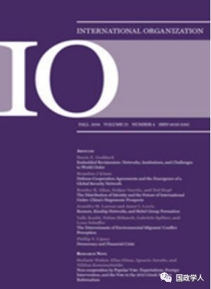
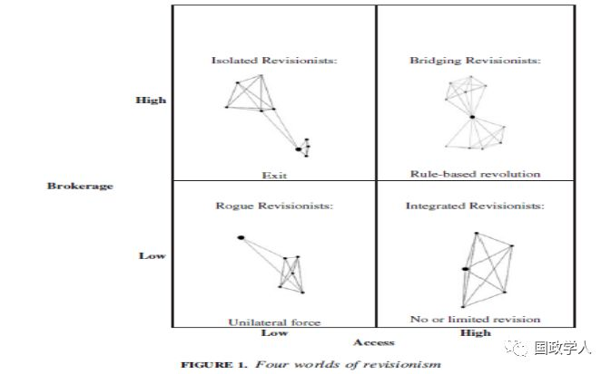

收录于合集

简 介
【作者】 Stacie E.Goddard, 美国韦尔斯利学院政治学副教授
【 编译】 刘孝玉
【校对】 彭小朵、黄运涛
【审核】 丁伟航
【来源】 Stacie E.Goddard, “Embedded Revisionism: Networks, Institutions, and Challenges to World Order” International Organization 72, Fall 2018, pp.763-797.
【期刊】 《国际组织》（International Organization），简称“IO”，是一份经过同行评议的季刊，涵盖国际事务的各个领域。它成立于1947年，由剑桥大学出版社代表国际组织基金会出版。主编是Erik Voeten。根据期刊引文报告，2015年影响因子为3.213。根据期刊引文报告，2017年《中国科学院学报》的影响因子为4.517，在169种政治学类期刊中排名第2，在85种国际关系类期刊中排名第1。期刊网址：https://www.cambridge.org/core/journals/international- organization

嵌入修正主义：网络、制度与对世界秩序的挑战
Embedded Revisionism: Networks, Institutions, and Challenges to World Order
Stacie E.Goddard
内容提要
制度如何塑造世界政治中的修正主义行为？作者将网络关系方法应用于修正主义国家及其对制度秩序的挑战，把制度设想为网络——修正主义者嵌入其中的持续社会交往模式。修正主义行为由一个国家如何在现存的制度网络中定位来塑造。一个国家的定位对为实现其目标所能配置的物质文化资源具有重要的影响，从而影响修正主义战略。针对网络位置的两种衡量标准——“访问”和“代理”，作者提出了四种理想类型的修正主义者及其在国际体系中的战略: 整合修正主义者，它们可能追求制度参与; 桥接修正主义者，它们将寻求以规则为基础的革命;孤立修正主义者，它们更愿意退出制度体系; 无赖修正主义者，它们手头资源很少，因此最终必须诉诸霸权暴力。作者又通过19世纪20年代的俄罗斯、19世纪60年代的普鲁士、冷战初期的苏联以及20世纪20、30年代的日本修正主义者及其制度秩序的四个案例检验了这些理想类型。
全文共分为三个部分， 第一部分作者介绍了网络关系分析方法，第二部分则通过四个案例对这一方法进行检验，以证明其有效性，最后作者借用这一方法分析了中国和俄罗斯不同的修正主义。
文章导读
**1
**
引 言 ****
关于中国是否会挑战美国领导的制度秩序的辩论核心是一个重要的理论问题：修正主义国家在什么条件下挑战制度秩序?从本质上讲，是什么驱动了世界政治中修正主义行为的强度？历史角度看，各国的修正主义野心各不相同，采取何种战略——接受还是挑战制度秩序——取决于修正主义者的目标是有限的还是革命性的。本文作者认为，修正主义者的战略选择不能只归因为意图，因为为了挑战制度秩序，一个国家还必须能够调动大量的物质和意识形态资源。这些资源的获得与否取决于修正主义者希望推翻的制度体系。
为解释制度如何驱动修正主义行为，作者将关系网络的方法引入对国家和国际秩序的研究。作者把“制度秩序”设想为网络结构——一种国家间社会和文化交往的模式，国家在制度网络中的定位不同其所选择的修正主义战略和行为也不相同。
作者认为网络位置的两种形式——“访问”和“代理”——尤为重要。访问是指一个国家嵌入制度网络的程度，它赋予修正主义者要求内部制度变革的权力。代理是指各国是否连接了不同的网络，它赋予修正主义者在现存制度网络之外的军事、经济和社会权力。将这两个衡量标准结合起来，就产生了四种理想的修正主义类型：整合修正主义者，即那些拥有高访问和低代理的国家，将会寻求制度参与；桥接修正主义者拥有高访问和高代理，从而有能力在现存制度秩序内外调动资源，因此他们将尝试以规则为基础的革命，寻求在现存制度秩序内的根本变革；孤立修正主义者，低访问和高代理国家，可能会退出制度秩序。在制度秩序内如果没有资源满足他们的要求，他们将试图建立一个新的排他的势力范围；最后，无赖修正主义者，访问和代理都很低，在缺乏任何形式的力量下，这些行动者将会诉诸霸权暴力，颠覆国际秩序。
**2
**
你是什么类型的? 改革、革命与国际制度秩序
传统上根据国家不同的修正主义目标，将它们划分为两种修正主义国家类型：有限修正主义国家和革命修正主义国家。有限修正主义国家在保存现有的制度秩序的同时寻求制度变革，而革命修正主义国家挑战的则是制度秩序本身。
但作者指出，修正主义国家的多样性远超传统观点认为的两种。除了传统观点划分的两种修正主义国家类型外，作者认为还有在制度秩序中实现基于规则的革命的修正主义国家和完全退出现存制度秩序，转而建立新的制度秩序的修正主义国家。
作者认为将修正主义行为归因于国家偏好是有问题的，因为偏好和修正主义行为之间存在脱节。原因在于修正主义国家在选择修正主义战略和行为时还受到它所能调动的军事、经济和社会资本的程度，现存制度秩序通过支持或限制修正主义国家的这种能力影响其修正主义战略。
**3
**
制度与修正主义：一种关系网络方法
作者认为，制度秩序影响着一个国家的修正主义类型、战略和行为。修正主义者在制度秩序中的定位影响他们的修正主义类型，进而影响到一个国家的修正主义战略选择：退出、基于规则的革命、霸权暴力或制度参与。
为了解释制度地位如何影响修正主义，作者对行动者和制度借鉴了关系网络方法。在国际体系中，往往存在一种占主导地位的制度秩序，即包含国际体系中最强大国家的网络结构，同时有许多子网络结构环绕在周围。修正主义者在制度网络中的地位一旦确立，很难发生系统性变革，它会产生强大的反馈效应，通过驱动或抑制修正主义者在世界政治中的行为机制发挥作用。作者指出了两种对于国际政治中修正主义的塑造极其重要的网络定位，即“访问”与“代理”。将“访问”和“代理”两种定位结合起来，形成了上述的四种修正主义者类型及其修正主义战略。

**4
**
理论检验 ： 修正主义战略的四个维度
作者为了检验网络关系理论的合理性，首先用表格的形式概述了1815年以来国际社会中的修正主义国家，证明关系网络理论的合理性。随后作者从中选取出四个历史性案例——19世纪早期的俄罗斯、19世纪中期的普鲁士、20世纪40年代末的苏联、20世纪30年代的日本进行具体的验证。
受约束的修正主义者：沙皇俄国与 “欧洲协调”机制
在19世纪早期，俄国的修正主义目标是将其领土扩大到近东的奥斯曼帝国。然而面对1821年希腊革命，沙皇亚历山大却避开了修正主义战略,选择制度参与,通过在“欧洲协调”机制内的伙伴谈判结束希腊革命。
作者认为促使沙皇俄国选择制度参与的原因是它的整合修正主义定位。在希腊起义期间,俄国通过对“欧洲协调”机制的高访问,把国家定位为一个整合修正主义者，这一身份抑制了其在近东的扩张性修正主义目标。作者总结道，俄国整合修正主义者的定位使它选择了制度参与，维持“欧洲协调”机制甚至成为俄国外交政策的基本目标。
超越俾斯麦：普鲁士、桥接和 “基于规则的革命”
从1864年到1871年，普鲁士进行了“基于规则的革命”，从制度秩序内部挑战欧洲机制的基础，使其在没有牺牲其作为欧洲机制核心成员地位的情况下实现了革命。
作者认为俾斯麦的政治智慧固然发挥了一部分作用，更重要的是普鲁士在制度秩序中的身份定位。它既是欧洲传统的王朝政治秩序中的一员，同时又以中间人角色与德国民族主义者的一个分支有着密切的联系。这种桥接修正主义者的地位赋予普鲁士强大的结构性能力，使它可以在现有机制内外利用军事、经济和社会力量。作者认为，普鲁士在制度网络中的地位使其为修正主义开辟新的道路，即在制度秩序中实现了以规则为基础的革命。
退出秩序 :冷战初期的苏联和孤立修正主义
冷战期间，苏联采取了退出战略。在二战后的最初几年里，特别是马歇尔计划之后，苏联抛弃了西方制度，转而在一个排他的势力范围内追求修正主义的目标。
作者认为，苏联选择退出战略并不令人意外，苏联似乎注定要建立一个孤立的修正主义立场，使其能够在不受西方干涉的情况下追求革命目标。苏联人曾追求进入占主导地位的网络，但这是基于他们认为进入主导秩序将促进以规则为基础的革命。在这一追求受挫以后，苏联选择了决定性的退出，并创造了另一种特殊的制度秩序，即历史学家所说的“苏维埃化”，来追求其修正主义目标。
“ 武力即精神”:日本与无赖修正主义者的困境
整个20世纪30年代，日本的修正主义目标不仅仅是领土，而且企图建立一个新的制度秩序。到了30年代末，日本已经采取了霸权主义的修正主义战略。
考虑到日本在一战后制度秩序中有利地位并且致力于维持这一秩序，日本的霸权修正主义转向令人费解。然而，作者认为，正是日本作为无赖修正主义者的立场，促使其转向霸权修正主义战略。因为日本发现，与其他大国相比，它对一战后体系的进入是有限的，甚至是边缘化的。由于低访问和低代理，日本既没有体制上的实力，也没有能力去追求哪怕是有限的修正主义要求。作者认为，正是这些制度内的限制改变了日本的偏好，促使日本从有限的领土扩张转向挑战主导制度秩序。
**5
**
世界政治中的制度和修正主义动力
作者再次强调了其所讨论的基本论点，制度秩序的定位塑造了修正主义的类型。因此，修正主义不能归结为意图。定位影响修正主义行为的成本和收益、修正主义行动的途径，甚至修正主义本身的偏好。因此，修正主义与现存的制度秩序紧密相连。
作者进而利用网络关系方法分析了中国和俄罗斯的修正主义。不同于过往的研究认为中国受到了自由制度秩序的约束，作者认为中国即便现在受到了约束，但随着时间的推移，制度秩序结构的改变会使中国的修正主义类型发生改变，中国作为一个正在崛起的修正主义者，会把自己拉向（基于规则的）革命战略；而俄罗斯在冷战以后被自由制度秩序边缘化，由于低访问和低代理，它越来越多地对其近邻采取暴力行动，并在公然挑战国际秩序方面变得更加直言不讳。
作者最后说，尽管没有任何制度秩序可以超越权力政治，使修正主义失效，但就此断言全球治理无足轻重也有失偏颇，修正主义者是和维持现状的国家一样，在制度秩序的结构中发挥权力政治作用的。
** 官网链接：** ** _
** Cambridge Core**
_**
https://www.cambridge.org/core/journals/international- organization/article/embedded-revisionism-networks-institutions-and- challenges-to-world-order/638F5371CD30CE51C304065D9F2FF360
_ ** _ 本文由国政学人平台独家编译首发**
更多阅读
【重磅推荐】巴里·布赞：英国学派视角下的中国崛起 | 国政学人
【国际地位】ISQ杂志：承认国际地位：一种关系方法 | 国政学人
【合法性研究】为什么国家合法性信仰与国际合法性信仰有关？ | 国政学人
国政学人 （ID：guozhengxueren)
为方便学人及时阅读高质量文章
别忘把国政学人设置 星标 哦~